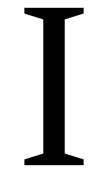

To see the other pages, look above. The one highlighted is the one you are currently viewing.
Addition is one of the four operations. If you arrange the four operations alphabetically, addition comes first.
Above is the symbol that we use to add things. It has a horizontal line and a vertical line. Lines are very cool.
To add numbers you add them. 1+1=2. This is important. If we were not able to add things, that would be very bad. Everything would be much more difficult without the ability to perform addition. Numbers can be "added" to each other to get larger numbers.
Fun fact: did you know that addition has the letter "d" in it twice? You know another word that has the letter "d" in it twice? "middle." The horizontal and vertical lines of the addition symbol intersect in the middle!

The letter "D" is above!
Another letter that appears twice in "addition" is "I"!
Addition is an important operation, and the word "addition" also has a bunch of cool letters!